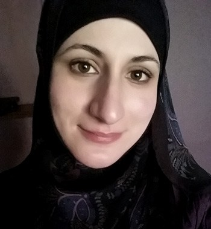

sara soueidan

Sara is a Lebanon-based frontend developer. Sara has worked with a a
strong collection of companies including Netflix, Smashing Magazine and
more.
Sara has workshops for companies looking to improve their user
experience in the digital world. The workshops help build clean and
usable sites and include a strong focus on accessibility.
"I’m a freelance front-end UI/UX developer, trainer, author and speaker based in Lebanon, working with companies across the globe. I partner with design teams to execute and build beautiful, progressive Web user interfaces and design systems, with a strong focus on responsive design, performance, and accessibility, using the latest front-end design techniques." sarasoueidan.com